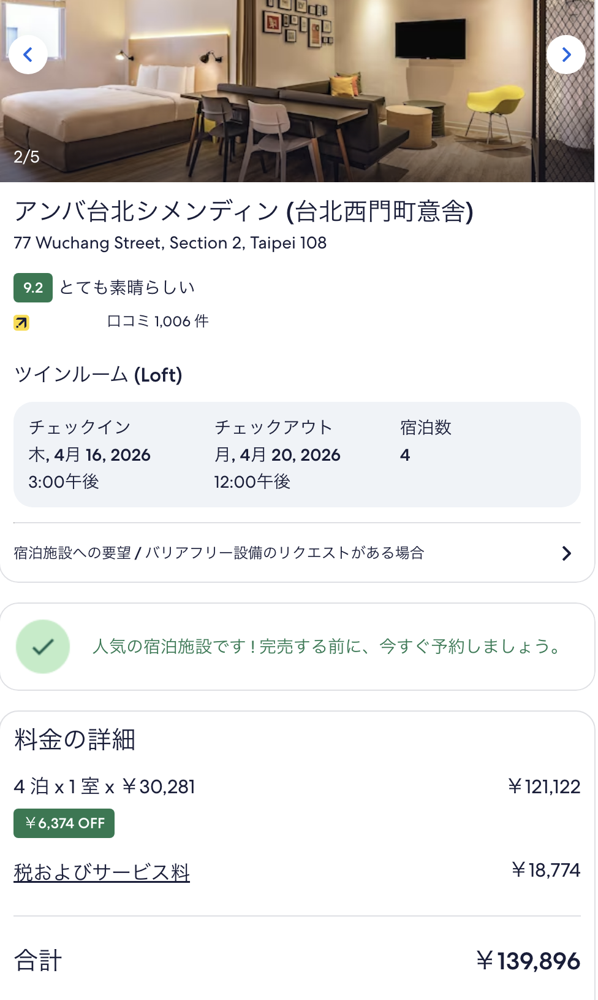

Hotels
西門町エリア — 夜市・グルメ・ショッピング全部徒歩圏。ツイン or ダブル1室
Mid-Range｜日系｜予約検討中
相鉄グランドフレッサ 台北西門
4泊2人 ¥125,898（会員価格・現地払い）

スタンダードツインルーム（眺望なし）・シングルベッド2台 120×200・素泊まり・キャンセル/変更可
- 2024年2月開業。設備ピカピカ
- 全室30㎡以上 — 台北では破格の広さ。2人でもゆったり
- 西門MRT 3番出口 徒歩1分
- 日本語フロント常駐。セルフランドリー完備
Mid-Range｜デザインホテル
amba Taipei Ximending
4泊2人 ¥134,252（朝食込み・税サ込・Agoda）

ロフトツイン (Loft Twin)・41㎡・シングルベッド2台・朝食込み・4泊 4/16〜20・キャッシュバック¥3,806適用後
- 五角形ビルのデザインホテル
- 西門MRTから徒歩5分
- 音楽ラウンジ、クリエイティブゾーン
- 台湾らしいデザイン体験
朝食比較 — 朝食込みだとambaが安い
| 相鉄フレッサ | amba | |
| 宿泊料 | ¥125,898 | ¥134,252 |
| 朝食 | +¥13,888（別途） | 込み |
| 朝食込み合計 | ¥139,786 | ¥134,252 |
| 朝食スタイル | セットメニュー5択 | ビュッフェ（台湾+洋食） |
| 朝食メニュー | パンケーキ、フレンチトースト、エッグベネディクト等 | 飯糰、鹹豆漿、台湾料理+洋食 |
| 朝食時間 | 7:00〜10:30 | 6:30〜10:00 |
※ 相鉄の朝食はNT$350/人（1F 武蔵野森珈琲）。前日までにフロント申込必要（当日券なし）